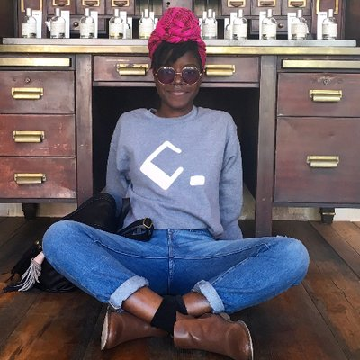
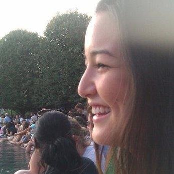
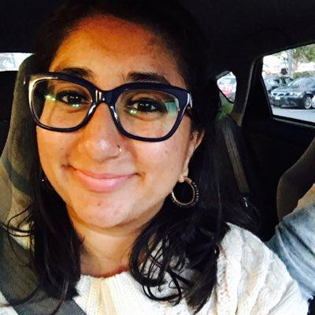
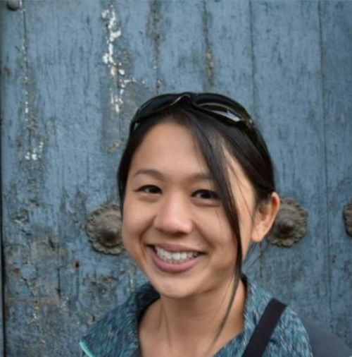
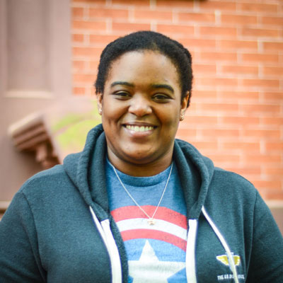
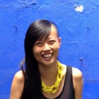
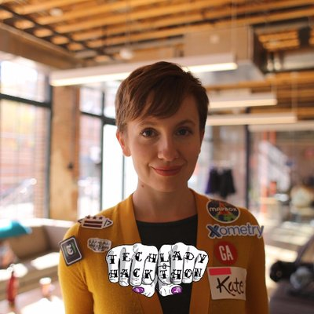
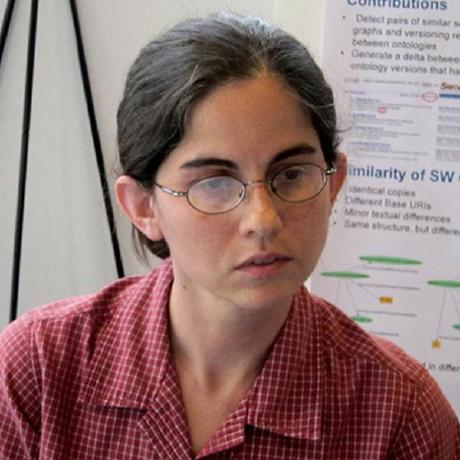

Programmers
-

Pamela Assogba
Vox Media
-
Aditi Chaudhry
Capital One
-
Lisa Chung
Motley Fool
-
Megan DeLaunay
Capital One
-
Courtney Eimerman-Wallace
Color of Change
-
Rakia Finley
FIN Digital & Surge Assembly
-

Erica Geiser
Social Tables
-
Betsy Haibel
Roostify
-
Anita Hall
The Washington Post
-
Lauren Jacobsen
General Assembly
-

Sana Javed
National Journal
-
Veni Kunche
US Geological Survey
-
Leigh Lawhon
The Self-Taught Developer
-
Natassja Linzau
National Academies of Science
-
Laura Lorenz
Industry Dive
-
Emily McAfee
Mapbox
-
Katherine McClintic
LivingSocial / Groupon
-
Tammy Perrin
Attunity
-
Clare Politano
Social Tables
-

Jennifer Safford McGerald
AOL Inc.
-
Rachel Shorey
The New York Times Interactive
-
Liz Theurer
United Income
-

Kristian Tran
Deloitte Digital
-

Pamela Vong
InfernoRed Technology
-

Sabrina Williams
US Digital Service
Designers
-
Ashleigh Axios
Automattic
-
Jessica D'Amico
Just Jess & Peers Conference
-
Laura Ellena
Ad Hoc
-
Ngan Hoang
Vox Media
-
Audra Koklys Plummer
Capital One
-
Amy Lee Walton
Mapbox
-
Catherine Madden
Relay by Catherine Madden
-
Hareem Mannan
Excella Consulting
-
Laura McGuigan
Atypical Notion
-
Chloe Negron
Nclud
-

Shelly Ni
Nava PBC
-
Alisha Ramos
Nava PBC
-
Alesha Randolph
Vox Media
-
Liz Rose Chmela
Made by We
Data Scientists
-
Danielle Beaulieu
Origent Data Sciences
-
Rebecca Bilbro
Bytecubed/District Data Labs
-
Nicole Donnelly
The Office of the Chief Technology Officer
-
Laura Drummer
Novetta
-

Kate Rabinowitz
DataLensDC
-

Jennifer Sleeman
Deep Learning Analytics
-
Anna Thorson
National Geographic Partners
-
Angela Wong
The Washington Post
-
Elena Zheleva
National Science Foundation